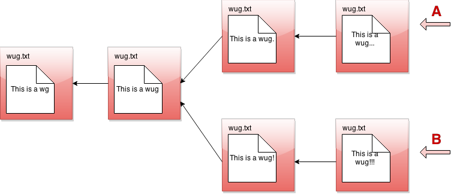
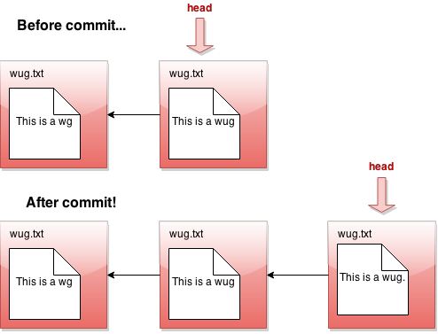
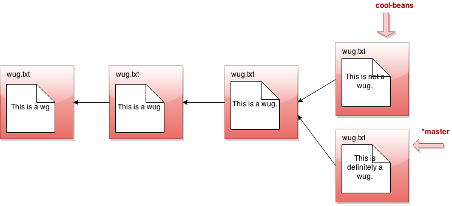

In a departure from our usual practice, we will allow partnerships. Both partners will get the same grade. We'll will assign partners to those who want them and do not choose one.
[The skeleton, containing an autograder and utilities, is still in progress.
We'll let you know when it is released. Your project, as usual, will go into
a subdirectory named proj3.]
A. Overview of Gitlet
In this project you'll be implementing a version-control system. This version-control system mimics some of the basic features of the popular version-control system git, but it is smaller and simpler, so we have named it gitlet.
A version-control system is essentially a backup system for files on your computer. The main functionality that gitlet supports is:
- Saving backups of directories of files. In gitlet, this is called committing, and the backups themselves are called commits.
- Restoring a backup version of one or more files or entire commits. In gitlet, this is called checking out those files or that commit.
- Viewing the history of your backups. In gitlet, you view this history in something called the log.
- Maintaining related sequences of commits, called branches.
- Merging changes made in one branch into another.
The point of a version-control system is to help you when coding complicated projects, or when collaborating with others on a project. You save versions of the project periodically. If at some later point in time you accidentally mess up your code, then you can restore your source to a previously committed version (without losing any of the changes you made since then).
In gitlet, you don't just commit individual files at a time. Instead, you can commit an arbitrary set files at the same time. We like to think of each commit as a snapshot of your entire project at one point in time. However, for simplicity, many of the examples in the remainder of this document involve just committing one file at a time. Just keep in mind you could add in multiple files to each commit.
In this project, it will be helpful for us to visualize the commits we make over time. Suppose we have a file wug.txt, we add some text to it, and commit it. Then we modify the file and commit these changes. Then we modify the file again, and commit the changes again. Now we have saved three total backup versions of this file, each one further in time than the previous. We can visualize these commits like so:

Here we've drawn an arrow indicating that each commit contains some kind of reference to the commit that came before it. We call the commit that came before it the parent commit — this will be important later. But for now, does this drawing look familiar? That's right; it's a linked list!
The big idea behind gitlet is that we can visualize the history of the different versions of our files in a list like this. Then it's easy for us to restore old versions of files. You can imagine making a command like: "Gitlet, please revert to the state of the files at commit #2", and it would go to the second node in the linked list and restore the copies of files found there.
If we tell gitlet to revert to an old commit, the front of the linked list will no longer reflect the current state of your files, which might be a little misleading. In order to fix this problem, we introduce something called the head pointer. The head pointer keeps track of where in the linked list we're currently "at". Normally, as we make commits, the head pointer will stay at the front of the linked list, indicating that the latest commit reflects the current state of the files:
However, let's say we revert to the state of the files at commit #2 (technically, this is the reset command, which you'll see later in the spec). We move the head pointer back to show this:

All right, now, if this were all gitlet could do, it would be a pretty simple system. But gitlet has one more trick up its sleeve: it doesn't just maintain older and newer versions of files, it can maintain differing versions. Imagine you're coding a project, and you have two ideas about how to proceed: let's call one Plan A, and the other Plan B. Gitlet allows you to save both versions, and switch between them at will. Here's what this might look like, in our pictures:
It's not really a linked list anymore. It's more like a tree. We'll call this thing the commit tree. Keeping with this metaphor, each of the separate versions is called a branch of the tree. You can develop each version separately:

There are two pointers into the tree, representing the furthest point of each branch. At any given time, only one of these is the currently active pointer, and this what's called the head pointer. The head pointer is the pointer at the front of the current branch.
That's it for our brief overview of the gitlet system! Don't worry if you don't fully understand it yet; the section above was just to give you a high level picture of what its meant to do. A detailed spec of what you're supposed to do for this project follows this section.
But a last word here: one feature of the commit tree that it is in some sense immutable: once a commit node has been created, it can never be destroyed (or changed at all). We can only add new things to the commit tree, not modify existing things. This is an important feature of gitlet! Remember, it's a version-control system, and one of our goals with it is to allow us to save things so we don't delete them accidentally.
B. Internal Structures
Real git distinguishes several different kinds of objects. For
our purposes, the important ones are
- blobs: Essentially the contents of files.
- trees: Directory structures mapping names to references to blobs and other trees (subdirectories).
- commits: Combinations of log messages,
other metadata (commit date, author,
etc.), a reference to a tree, and references to
parent commits.
The repository also maintains a mapping from branch heads (we've used names
like
master,proj2, etc.) to references to commits, so that certain important commits have symbolic names.
We will simplify from git still
further by
- Incorporating trees into commits and not dealing with subdirectories (so there will be one "flat" directory of plain files for each repository).
- Having a single parent commit associated with each commit.
- Our metadata will consist only of a timestamp and log message. A commit, therefore, will consist of a log message, timestamp, a mapping of file names to blob references, and a single parent reference.
Every object — every blob and every commit in our case — has a unique
integer id that serves as a reference to the object.
An interesting feature of git is that these ids are universal: unlike a
typical Java implementation, two objects with exactly the same content will
have the same id on all systems. In the case of blobs, "same content" means
the same file contents. In the case of commits, it means the same metadata,
the same mapping of names to references, and the same parent reference.
The objects in a repository are thus said to be content addressable.
Both git and gitlet accomplish this the same way: by using a cryptographic
hash function called SHA-1 (Secure Hash 1), which produces a 160-bit integer
hash from any sequence of bytes. Cryptographic hash functions have the property
that it is extremely difficult to find two different byte streams with the
same hash value (or indeed to find any byte stream given just its hash value),
so that essentially, we may assume that the probability of
that any two objects with different contents have the same SHA-1 hash value is
2-160 or about 10-48. Basically, we simply ignore the
possibility of a hashing collision, so that the system has, in principle,
a fundamental bug that in practice never occurs!
Fortunately, there are library classes for computing SHA-1 values, so you won't have to deal with the actual algorithm. All you have to do is to make sure that you correctly label all your objects. In particular, this involves
- Including all metadata and references when hashing a commit.
- Distinguishing somehow between hashes for commits and hashes for blobs. A good way to do so is to hash in an extra word for each object that has one value for blobs and another for commits.
By the way, the SHA-1 hash value, rendered as a 40-character
hexadecimal string, makes
a convenient file name for storing your data in your .gitlet
directory (more on that below). It also gives you a convenient way to
compare two files (blobs) to see if they have the same contents: if their
SHA-1s are the same, we simply assume the files are the same.
For remotes (like origin and shared, which we've been using all semester),
we'll simply use other gitlet repositories. Pushing simply means copying all
commits and blobs that the remote repository does not yet have to the remote
repository, and resetting a branch reference. Pulling is the same, but in the
other direction
Reading and writing your internal objects from and to files is actually pretty
easy, thanks to Java's serialization facilities. The interface
java.io.Serializable has no methods,
but if a class implements it, then the Java
runtime will automatically provide a way to convert to and from a stream of
bytes, which you can then write to a file using the I/O class
java.io.ObjectOutputStream and read back (and deserialize) with
java.io.ObjectInputStream).
The term "serialization" refers to the conversion from some arbitrary structure
(array, tree, graph, etc.) to a serial sequence of bytes.
Here is a summary example of the structures discussed in this section.
As you can see, each commit (rectangle) points to some blobs (circles), which
contain file contents. The commits contain the file names and references to
these blobs, as well as a parent link. These references, depicted as arrows,
are represented in the .gitlet directory using their SHA-1 hash values (the
small hexdecimal numerals above the commits and below the blobs). The newer
commit contains an updated version of wug1.txt, but shares the same version
of wug2.txt as the older commit.

C. Detailed Spec of Behavior
Overall Spec
The only structure requirement we're giving you is that you have a
class named Gitlet and that it has a main method. Here's your skeleton
code for this project (in package gitlet):
public class Main {
public static void main(String[] args) {
// FILL IN
}
}We are also giving you some utility methods for performing a number of mostly file-system-related tasks, so that you can concentrate on the logic of the project rather than the peculiarities of dealing with the OS.
You may, of course, write additional Java classes to support your project — in fact, please do. But don't use any external code (aside from JUnit), and don't use any programming language other than Java. You can use all of the Java Standard Library that you wish, plus utilities we provide.
The majority of this spec will describe how Gitlet.java's main
method must react when it receives various arguments which correspond
to commands to the gitlet system. But before we break down command-by-
command, here are some overall guidelines the whole project should
satisfy:
- In order for gitlet to work, it will need a place to store old
copies of files (it is a backup system, after all), and other
metadata. All of this stuff must be stored in a directory called
.gitlet, just as this information is stored in directory.gitfor the real git system (files with a.in front are hidden files. You will not be able to see them by default on most operating systems. One Unix, the commandls -awill show them.) A gitlet system is considered "initialized" in a particular location if it has a.gitletdirectory there. Most gitlet commands (except for the init command) only need to work when used from a directory where a gitlet system has been initialized — i.e. a directory that has a.gitletdirectory. The files that aren't in your.gitletdirectory (i.e. the current versions of the files, not the backups), are referred to as the files in your working directory. - Most commands have runtime or memory usage requirements. You must follow these. Some of the runtimes are described as constant "relative to any significant measure". The significant measures are: any measure of number or size of files, any measure of number of commits. You can ignore time required to serialize or deserialize, with the one caveat that your serialization time cannot depend in any way on the total size of files that have been added, committed, etc (what is serialization? You'll see later in the spec). You can also pretend that getting from a hash table is constant time.
- Some commands have failure cases with a specified error message. The exact formats of these are specified later in the spec. If your program ever encounters one of these failure cases, it must print the error message and not change anything else. You don't need to handle any other error cases except the ones listed as failure cases.
There are some failure cases you need to handle that don't apply to a particular command. Here they are:
- If a user doesn't input any arguments, print the message:
Please enter a command.and exit. - If a user inputs a command that doesn't exist, print the
message:
No command with that name exists.and exit.
- If a user doesn't input any arguments, print the message:
- Some of the commands have their differences from the real git listed. The spec is not exhaustive in listing all differences from git, but it does list some of the bigger or potentially confusing and misleading ones.
- Do NOT print out anything except for what the spec says. Some of our autograder tests will break if you print anything more than necessary.
- The spec classifies some commands as "dangerous". Dangerous commands are ones that potentially overwrite files (that aren't just metadata) — for example, if a user tells gitlet to restore files to older versions, gitlet may overwrite the current versions of the files. Just FYI.
D. The Commands
init
- Usage:
java gitlet.Main init - Description: Creates a new gitlet version-control system in the
current directory. This system will automatically start with one
commit: a commit that contains no files and has the commit message
initial commit. - Runtime: Should be constant relative to any significant measure.
- Failure cases: If there is already a gitlet version-control
system in the current directory, it should abort. It should NOT
overwrite the existing system with a new one. Should print the error
message
A gitlet version-control system already exists in the current directory. - Dangerous?: No
add
- Usage:
java gitlet.Main add [file name] - Description: Adds a copy of the file as it currently exists to
the staging area (see the description of the
commitcommand). For this reason, adding a file is also called staging the file. The staging area should be somewhere in.gitlet. - Runtime: In the worst case, should run in linear time relative to the size of the file being added.
- Failure cases: If the file does not exist, print the error
message
File does not exist. - Dangerous?: No
commit
- Usage:
java gitlet.Main commit [message] Description: Saves a snapshot of certain files in the current commit and staging area so they can be restored at a later time, creating a new commit. The commit is said to be tracking the saved files. By default, each commit's snapshot of files will be exactly the same as its parent commit's snapshot of files; it will keep versions of files exactly as they are, and not update them. A commit will only update files it is tracking that have been staged at the time of commit, in which case the commit will now include the version of the file that was staged instead of the version it got from its parent. A commit will save and start tracking any files that were staged but weren't tracked by its parent. Finally, files tracked in the current commit may be untracked in the new commit as a result of the
rmcommand (below).The bottom line: By default a commit is the same as its parent. Staged and removed files are the updates to the commit.
Some additional points about commit:
- The staging area is cleared after a commit.
- The commit command never adds, changes, or removes files in the
working directory (other than those in the
.gitletdirectory). Thermcommand will remove such files, as well as somehow marking them to be untracked bycommit. - Any changes made to files after staging or removal are ignored by the
commitcommand, which only modifies the contents of the.gitletdirectory. For example, if you remove a tracked file using the Unixrmcommand (rather thangitlet's command of the same name), it has no effect on the next commit, which will still contain the deleted version of the file. - After the commit command, the new commit is added as a new node in the commit tree.
- The commit just made becomes the "current commit", and the head pointer now points to it. The previous head commit is this commit's parent commit.
- Each commit should contain the date time it was made.
- Each commit has a log message associated with it that describes the
changes to the files in the commit. This is specified by the
user. The entire message should take up only one entry in
the array
argsthat is passed tomain. To include multiword messages, you'll have to surround them in quotes. - Each commit is identified by its SHA-1 id, which must include the file (blob) references of its files, parent reference, log message, and commit time.
- Runtime: Runtime should be constant with respect to any measure
of number of commits. Runtime must be no worse than linear with
respect to the total size of files the commit is tracking.
Additionally, this command has a memory requirement: Committing must
increase the size of the
.gitletdirectory by no more than the total size of the staged files at the time of commit, not including additional metadata. This means don't store redundant copies of versions of files that a commit receives from its parent. One more You are allowed to save whole additional copies of files; don't worry about only saving diffs, or anything like that. - Failure cases: If no files have been staged (or marked for
untracking: more on that next), aborts. Print the message
No changes added to the commit.Every commit must have a non- blank message. If it doesn't, print the error messagePlease enter a commit message.It is not a failure for tracked files to be missing from the working directory or changed in the working directory. Just ignore everything outside the.gitletdirectory entirely. - Dangerous?: No
- Differences from real git: In real git, commits may have multiple parents (due to merging) and also have considerably more metadata.
Here's a picture of before-and-after commit:

rm
- Usage:
java gitlet.Main rm [file name] - Description: Untrack the file; that is, indicate (somewhere in the
.gitletdirectory) that it is not to be included in the next commit, even if it is tracked in the current commit (which will become the next commit's parent). Remove the file from the working directory if it was tracked in the current commit. If the file had been staged, then unstage it, but don't remove it from the working directory unless it was tracked in the current commit. - Runtime: Should run in constant time relative to any significant measure.
- Failure cases: If the file is neither staged nor tracked by the
head commit, print the error message
No reason to remove the file. - Dangerous?: Yes (although if you use our utility methods, you will only hurt your repository files, and not all the other files in your directory.)
log
- Usage:
java gitlet.Main log Description: Starting at the current head commit, display information about each commit backwards along the commit tree until the initial commit. This set of commit nodes is called the commit's history. For every node in this history, the information it should display is the commit id, the time the commit was made, and the commit message. Here is an example of the exact format it should follow:
=== Commit a0da1ea5a15ab613bf9961fd86f010cf74c7ee48 2015-03-14 11:59:26 A commit message. === Commit 3e8bf1d794ca2e9ef8a4007275acf3751c7170ff 2015-03-14 11:49:29 Another commit message. === Commit e881c9575d180a215d1a636545b8fd9abfb1d2bb 2015-03-14 11:39:26 initial commitThere is a
===before each commit and an empty line after it. As in realgit, each entry displays the unique SHA-1 id of the commit object. Display commits with the most recent at the top. By the way, there's a class in the Java standard library that will help you format the dates really easily. Look into that instead of trying to construct it manually yourself!- Runtime: Should be linear with respect to the number of nodes in head's history.
- Failure cases: None
- Dangerous?: No
Here's a picture of the history of a particular commit. If the current branch's head pointer happened to be pointing to that commit, log would print out information about the circled commits:

The history ignores other branches and the future. Now that we have the concept of history, let's refine what we said earlier about the commit tree being immutable. It is immutable precisely in the sense that the history of a commit with a particular id may never change, ever. If you think of the commit tree as nothing more than a collection of histories, then what we're really saying is that each history is immutable.
global-log
- Usage:
java gitlet.Main global-log - Description: Like log, except displays information about all commits ever made. The order of the commits does not matter.
- Runtime: Linear with respect to the number of commits ever made.
- Failure cases: None
- Dangerous?: No
find
- Usage:
java gitlet.Main find [commit message] - Description: Prints out the ids of all commits that have the given commit message, one per line. If there are multiple such commits, it prints the ids out on separate lines.
- Runtime: Should be linear relative to the number of commits.
- Failure cases: If no such commit exists, prints the error
message
Found no commit with that message. - Dangerous?: No
- Differences from real git: Doesn't exist in real git. Similar effects can be achieved by grepping the output of log.
status
- Usage:
java gitlet.Main status Description: Displays what branches currently exist, and marks the current branch with a
*. Also displays what files have been staged or marked for untracking. An example of the exact format it should follow is as follows.=== Branches === *master other-branch === Staged Files ===wug2.txt
wug.txt === Removed Files === goodbye.txt === Modifications Not Staged For Commit ===junk.txt (deleted) wug3.txt (modified)
=== Untracked Files ===random.stuff
There is an empty line between each section. Entries should be listed in lexicographic order, using the Java string-comparison order (the asterisk doesn't count). A file in the working directory is "modified but not staged" if
- Changed in the working directory, but not staged; or
- Staged, but with different contents than in the working directory; or
- Staged, but deleted in the working directory; or
Not staged, but tracked and deleted in the working directory.
The final category ("Untracked Files") is for files present in the working directory but not tracked.
- Runtime: Make sure this is linear relative to the number of files that have been staged or marked for untracking and the number of branches that exist.
- Failure cases: None
- Dangerous?: No
checkout
Checkout is a kind of general command that can do a few different things depending on what its arguments are. There are 3 possible use cases. In each section below, you'll see 3 bullet points. Each corresponds to the respective usage of checkout.
Usages:
java gitlet.Main checkout -- [file name]java gitlet.Main checkout [commit id] -- [file name]java gitlet.Main checkout [branch name]
Descriptions:
- Takes the version of the file as it exists in the head commit, the front of the current branch, and puts it in the working directory, overwriting the version of the file that's already there if there is one.
- Takes the version of the file as it exists in the commit with the given id, and puts it in the working directory, overwriting the version of the file that's already there if there is one.
- Takes all files in the commit at the head of the given branch, and puts them in the working directory, overwriting the versions of the files that are already there if they exist. Also, at the end of this command, the given branch will now be considered the current branch (HEAD). Any files that are tracked in the current directory but are not present in the checked-out branch are deleted.
Runtimes:
- Should be linear relative to the size of the file being checked out.
- Should be linear relative to the size of the file being checked out.
- Should be linear with respect to the total size of the files in the commit's snapshot. Should be constant with respect to any measure involving number of commits. Should be constant with respect to the number of branches.
Failure cases:
- If the file does not exist in the previous commit, aborts,
printing the error message
File does not exist in the most recent commit, or no such branch exists. - If no commit with the given id exists, print
No commit with that id exists.Else, if the file does not exist in the given commit, printFile does not exist in that commit. - If no branch with that name exists, print
File does not exist in the most recent commit, or no such branch exists.If that branch is the current branch, printNo need to checkout the current branch.If a working file is untracked in the current branch and would be overwritten by the checkout, printThere is an untracked file in the way; delete it or add it first.
- If the file does not exist in the previous commit, aborts,
printing the error message
A [commit id] is, as described earlier, a hexadecimal numeral. A convenient
feature of real git is that one can abbreviate commits with a unique
prefix. For example, one might abbreviate
a0da1ea5a15ab613bf9961fd86f010cf74c7ee48as
a0da1ein the (likely) event that no other object exists with a SHA-1 identifier that
starts with the same six digits. You should arrange for the same thing to
happen for commit ids that contain fewer than 40 characters. Unfortunately,
using shortened ids might slow down the finding of objects if implemented
naively (making the time to find a file linear in the number of objects), so
we won't worry about timing for commands that use shortened ids. We suggest,
however, that you poke around in a .git directory (specifically,
.git/objects) and see how it manages to speed up its search. You will perhaps
recognize a familiar data structure implemented with the file system rather
than pointers.
None of these versions modifies the staging area: files scheduled for addition or removal remain so.
- Dangerous?: Yes!
All right, let's see what branch does in detail. Suppose our state looks like this:

Now we call java gitlet.Main branch cool-beans. Then we get this:
Hmm... nothing much happened. Let's switch to the branch with java
Gitlet checkout cool-beans:
Nothing much happened again?! Okay, say we make a commit now. Modify
some files, then java gitlet.Main add... then java gitlet.Main commit....
I was told there would be branching. But all I see is a straight line.
What's going on? Maybe I should go back to my other branch with java
Gitlet checkout master:

Now I make a commit...

Phew! So that's the whole idea of branching. Did you catch what's
going on? All that creating a branch does is to give us a new pointer. At any
given time, one of these pointers is considered the currently active
pointer, or the head pointer (indicated by *). We can switch the
currently active head pointer with checkout [branch name]. Whenever
we commit, it means we add a new commit in front of the currently
active head pointer, even if one is already there. This naturally
creates branching behavior.
Make sure that the behavior of your branch, checkout, and
commit match what we've described above. This is pretty core
functionality of gitlet that many other commands will depend upon. If
any of this core functionality is broken, very many of our autograder
tests won't work!
rm-branch
- Usage:
java gitlet.Main rm-branch [branch name] - Description: Deletes the branch with the given name. This only means to delete the pointer associated with the branch; it does not mean to delete all commits that were created under the branch, or anything like that.
- Runtime: Should be constant relative to any significant measure.
- Failure cases: If a branch with the given name does not exist,
aborts. Print the error message
A branch with that name does not exist.If you try to remove the branch you're currently on, aborts, printing the error messageCannot remove the current branch. - Dangerous?: No
reset
- Usage:
java gitlet.Main reset [commit id] - Description: Checks out all the files tracked by the given
commit. Also moves the current branch's head to that commit node.
See the intro for an example of what happens to the head pointer
after using reset. The
[commit id]may be abbreviated as forcheckout. - Runtime: Should be linear with respect to the total size of files tracked by the given commit's snapshot. Should be constant with respect to any measure involving number of commits.
- Failure case: If no commit with the given id exists, print
No commit with that id exists. - Dangerous?: Yes!
- Differences from real git: This command is
closest to using the
--hardoption, as ingit reset --hard [commit hash].
merge
- Usage:
java gitlet.Main merge [branch name] Description: Merges files from the given branch into the current branch. This method is a bit complicated, so here's a more detailed description:
- First consider what might be called the split point of the
current branch and the given branch. This is their earliest common
ancestor in the commit tree.
 If the split point is the same commit as the given branch, then
we do nothing; the merge is complete, and the operation ends.
If the split point is the current branch, then the current branch
is set to the same commit as the given branch and the operation
ends (this is known as fast forwarding). Otherwise, we continue
with the steps below.
If the split point is the same commit as the given branch, then
we do nothing; the merge is complete, and the operation ends.
If the split point is the current branch, then the current branch
is set to the same commit as the given branch and the operation
ends (this is known as fast forwarding). Otherwise, we continue
with the steps below. - Any files that have been modified in the given branch since the split point, but not modified in the current branch since the split point should be changed to their versions in the given branch (checked out from the commit at the front of the given branch). These files should then all be automatically staged. To clarify, if a file is "modified in the given branch since the split point" this means the version of the file as it exists in the commit at the front of the given branch has different content from the version of the file at the split point.
- Any files that have been modified in the current branch but not in the given branch since the split point should stay as they are.
- Any files that were not present at the split point and are present only in the current branch should remain as they are.
- Any files that were not present at the split point and are present only in the given branch should be checked out and staged.
- Any files present at the split point, unmodified in the current branch branch, and absent in the given branch should be removed (and untracked).
- Any files present at the split point, unmodified in the given branch, and absent in the current branch should remain absent.
Any files modified in different ways in the current and given branches are in conflict. "Modified in different ways" can mean that the contents of both are changed and different from other, or the contents of one are changed and the other is deleted, or the file was absent at the split point and have different contents in the given and current branches. In this case, replace the contents of the conflicted file with
<<<<<<< HEAD contents of file in current branch ======= contents of file in given branch >>>>>>>
but do not stage the result. Treat a deleted file in a branch as an empty file.
Once files have been updated according to the above, there are two possibilities:
- If
mergedid not result in any conflicted files, then merge should automatically commit with a message `Merged [current branch name] with [given branch name]. - Otherwise,
merge should not automatically make a commit. Instead, it
should print the message
Encountered a merge conflict., It is then up to the user to decide how to resolve the conflict (generally by editing the file and then staging it withadd, or removing it withrm) and to commit the result.
- If
- First consider what might be called the split point of the
current branch and the given branch. This is their earliest common
ancestor in the commit tree.
- Runtime: Should be linear in the lengths of the history of each branch plus the total size of new files added in commits in each branch.
- Failure cases: If a branch with the given name does not exist,
print the error message
A branch with that name does not exist.If attempting to merge a branch with itself, print the error messageCannot merge a branch with itself.If merge would generate an error because the commit that it does has no changes in it, just let the normal commit error message for this go through. - Dangerous?: Yes!
Differences from real git: There are quite a few. For one, in git, the new commit at the end of merge is special, because it maintains two back pointers remembering which two branches it came from. But gitlet only needs to maintain one normal back pointer on the current branch.
Real git does a more subtle job of merging files, displaying conflicts only in places where both files have changed since the split point.
Real git will force the user to resolve the merge conflicts before committing to complete the merge. Gitlet just allows users to commit to complete the merge whenever they want.
E. Miscellaneous Things to Know about the Project
Phew! That was a lot of commands to go over just now. But don't worry, not all commands are created equal. You can see for each command the approximate number of lines we took to do each part (that this only counts code specific to that command — it doesn't double-count code reused in multiple commands). You shouldn't worry about matching our solution exactly, but hopefully it gives you an idea about the relative time consumed by each command. Merge is a lengthier command than the others, so don't leave it for the last minute!
Anyway, by now this spec has given you enough information to get working on the project. But to help you out some more, there are a couple of things you should be aware of:
Dealing with Files
This project requires reading and writing of files. In order to do
these operations, you might find the classes java.io.File and
java.nio.file.Files helpful. Actually, you may find various things
in the java.io and java.nio packages helpful. Be sure to read the
gitlet.Utils package for other things we've written for you.
If you do a little
digging through all of these, you might find a couple of methods that will
make the io portion of this project much easier! One warning: If
you find yourself using readers, writers, scanners, or streams,
you're making things more complicated than need be.
all.
Serialization Details
If you think about gitlet, you'll notice that you can only run one
command every time you run the program. In order to successfully
complete your version-control system, you'll need to remember the
commit tree across commands. This means you'll have to design not just a
set of classes to represent internal gitlet structures during execution,
but you'll a parallel representation as files within your .gitlet
directories, which will carry across multiple runs of your program.
As indicated earlier, the convenient way to do this is to serialize
the runtime objects that you will also need to store permanently in files.
In Java, this simply involves implementing
the java.io.Serializable interface:
import java.io.Serializable;
class MyObject implements Serializable {...
}This interface has no methods; it simply marks its subtypes for the benefit of some special Java classes for performing I/O on objects. For example,
import java.io.File;
import java.io.FileOutputStream;
import java.io.IOException;
import java.io.ObjectOutputStream;
...MyObject obj = ....; File outFile = new File(someFileName); try { ObjectOutputStream out = new ObjectOutputStream(new FileOutputStream(outFile)); out.writeObject(obj); out.close(); } catch (IOException excp) { ... }
will convert obj to a stream of bytes and store them in the file whose
name is stored in someFileName. The object may then be reconstructed with
a code sequence such as
import java.io.File;
import java.io.FileInputStream;
import java.io.IOException;
import java.io.ObjectInputStream;
...MyObject obj; File inFile = new File(someFileName); try { ObjectInputStream inp = new ObjectInputStream(new FileInputStream(inFile)); obj = (MyObject) inp.readObject(obj); inp.close(); } catch (IOException excp) { ... obj = null; }
The Java runtime does all the work of figuring out what fields need to be converted to bytes and how to do so.
There is, however, one annoying subtlety to watch out for: Java serialization
follows pointers. That is, not only is the object you pass into writeObject
serialized and written, but any object it points to as well. If your internal
representation of commits, for example, represents the parent commit as a
pointer to another commit object, then writing the head of a branch will
write all the commits (and blobs) in the entire chain of commits
into one file, which is generally not what you want. With a little work, you
can avoid this problem. One technique is simply not to use Java pointers to
refer to commits and blobs in your runtime objects, but instead to use
SHA-1 hash strings. You then have a runtime map between these strings
and the runtime objects they refer to. You create and fill in this map
while gitlet is running, but never read or write it to a file.
F. Testing
[We'll be releasing a skeleton testing structure soon. Please watch for an announcement.]
gitlet, which calls your code
by executing a terminal command that calls Java. For end-to-end tests,
this is the only way you should interact with your code; you shouldn't
call your methods directly.
By the way, you should also try running your code from the command
line and use it just like git! Don't _only_ test with JUnit. In
addition, if you're using Windows, __be sure to test out your code and
tests on a unix/linux/mac machine, such as the lab computers__. You
want to make sure that your code does not only work in a Windows
environment, since our autograders will be run in Linux.
-->
G. Submission, Grading, and Checkpoints
Submit your project by putting it in a directory called proj3 and submitting
in the usual way.
About grading:
We will test your project by using canned sequences of gitlet command and
checking the output, so be sure you conform to the various specs for
output and error messages.
If any of the core functionality is broken
(namely add, commit, checkout, or log), then many of our tests
may break, and you will end up with few points. Make sure they work
exactly as the spec describes! Although the fringe functionality is
more difficult and time consuming to write (like merge),
fewer tests depend on these methods, so they won't impact
your grade as much.
H. Extra Credit: Going Remote
This project is all about mimicking git's local features. These are useful because they allow you to backup your own files and maintain multiple versions of them. However, git's true power is really in its remote features, allowing collaboration with other people over the internet. The point is that both you and your friend could be collaborating on a single code base. If you make changes to the files, you can send them to your friend, and vice versa. And you'll both have access to a shared history of all the changes either of you have made.
To get extra credit, implement some basic remote commands:
namely add-remote, rm-remote, push, fetch, and pull
You will get 5 extra-credit points for completing them.
Don't attempt or plan for extra credit until you have completed the
rest of the project.
Depending on how flexibly you have designed the rest of the project, 5 extra-credit points may not be worth the amount of effort it takes to do this section. We're certainly not expecting everyone to do it. Our priority will be in helping students complete the main project; if you're doing the extra credit, we expect you to be able to stand on your own a little bit more than most students.
The Commands
All right, now that you've gotten scp working, onto the rest of the project!
A few notes about the remote commands:
- Execution time will not be graded. For your own edification, please don't do anything ridiculous, though.
- All the commands are significantly simplified from their git equivalents, so specific differences from git are usually not notated. Be aware they are there, however.
So now let's go over the commands:
add-remote
- Usage: `java gitlet.Main add-remote [remote name] file://[name of remote directory]/.gitlet
- Description: Saves the given login information under the given
remote name. Attempts to push or pull from the given remote name
will then attempt to use this .gitlet directory. In real life, file
URLs (starting with
file://) contain complete paths such as java gitlet.Main add-remote other file:///home/cc/cs61b-xx/otherdir/.gitlet However, we allow paths relative to the git working directory in which you runjava gitlet.Main, such as java gitlet.Main add-remote other file://../testing/otherdir/.gitlet This allows you to provide tests of remotes that will work from all locations (on your home machine or within the grading program's software). - Failure cases: If a remote with the given name already exists,
print the error message:
A remote with that name already exists.You don't have to check if the user name and server information are legit. - Dangerous?: No.
rm-remote
- Usage:
java gitlet.Main rm-remote [remote name] - Description: Remove information associated with the given remote name. The idea here is that if you ever wanted to change a remote that you added, you would have to first remove it and then re-add it.
- Failure cases: If the given remote name has not been added,
print
A remote with that name does not exist.If a remote with the given name does not exist, print the error message:A remote with that name does not exist. - Dangerous?: No.
push
- Usage:
java gitlet.Main push [remote name] [remote branch name] Description: Attempts to append the current branch's commits to the end of the given branch at the given remote. Details:
This command only works if the remote branch's head is in the history of the current local head, which means that the local branch contains some commits in the future of the remote branch. In this case, append the future commits to the remote branch. Then, the remote should reset to the front of the appended commits (so its head will be the same as the local head). This is called fast-forwarding.
If the gitlet system on the remote machine exists but does not have the input branch, then simply add the branch to the remote gitlet.
- Failure cases: If the remote branch's head is not in the history
of the current local head, print the error message
Please pull down remote changes before pushing.If the remote.gitletdirectory does not exist, printRemote directory not found. - Dangerous?: No.
fetch
- Usage:
java gitlet.Main fetch [remote name] [remote branch name] - Description: Brings down commits from the remote gitlet into the
local gitlet. Basically, this copies all commits and blobs from the given
branch in the remote repository (that are not already in the current
repository) into a branch named
[remote name]/[remote branch name]in the local.gitlet(just as in realgit), changing[remote name]/[remote branch name]to point to the head commit (thus copying the contents of the branch from the remote repository to the current one). This branch is created in the local repository if it did not previously exist. - Failure cases: If the remote gitlet does not have the given
branch name, print the error message
That remote does not have that branch.If the remote.gitletdirectory does not exist, printRemote directory not found. - Dangerous? No
pull
- Usage:
java gitlet.Main pull [remote name] [remote branch name] - Description: Fetches branch
[remote name]/[remote branch name]as for thefetchcommand, and then merges that fetch into the current branch. - Failure cases: Just the failure cases of
fetchandmergetogether. - Dangerous? Yes!
I. Acknowledgments
Thanks to Alicia Luengo, Josh Hug, Sarah Kim, Austin Chen, Andrew Huang, Yan Zhao, Matthew Chow, especially Alan Yao, Daniel Nguyen, and Armani Ferrante for providing feedback on this project. Thanks to git for being awesome.
This project was largely inspired by this excellent article by Philip Nilsson.
This project was created by Joseph Moghadam. Modifications for Fall 2015 by Paul Hilfinger.